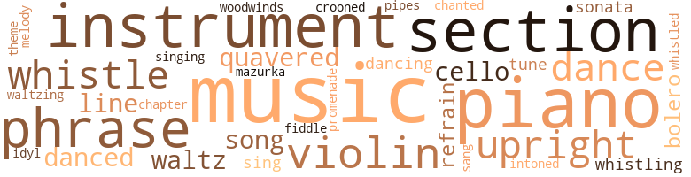
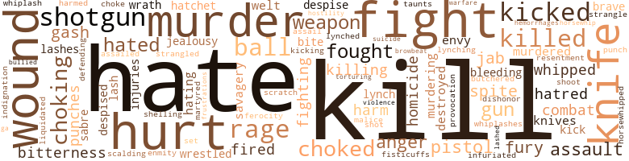

Serpent and the Staff (The), by Yerby, Frank (1958)
120 music-related terms matched in this text.
Most frequent terms in this topic: music (17); piano (12); section (9); phrase (5); violin (5)
bolero.n.01
Definition: music written in the rhythm of the bolero dance
| word | sentence |
|---|---|
| bolero | She was dressed in the very latest mode : a dark red linen bolero and skirt with inverted box pleats , the sleeves slightly puffed at the shoulders , but much less than the discarded , ugly , leg of mutton style . |
| bolero | Under the bolero jacket , she wore a tailored shirtwaist with a tall , standing collar like a man 's , ornamented with a tiny black velvet bow tie . |
cello.n.01
Definition: a large stringed instrument; seated player holds it upright while playing
| word | sentence |
|---|---|
| cello | Jan Muller , who ran the general store , with his cello leaning against his chair , beamed at his son , Fritz , who was carefully tuning his violin to the A Duncan was sounding on the Steinway Grand . |
| cello | Duncan swung into the irresistibly melodic opening of the Schubert Opus Ninety Nine , for violin , piano , and cello . |
| cello | Behind him , the violin cried whitely against the air , and the cello , muted and deep , answered it . |
chapter.n.01
Definition: a subdivision of a written work; usually numbered and titled
| word | sentence |
|---|---|
| chapter | Once , on a bet , alternating with one another , they recited an entire chapter of Virchow to the astonished delight of their friends . |
croon.v.01
Definition: sing softly
| word | sentence |
|---|---|
| crooned | " Come here , baby , an ' meet th ' Doctor , " Luvinia crooned . |
dance.n.01
Definition: an artistic form of nonverbal communication
| word | sentence |
|---|---|
| dance | Then I 'll ask her for a dance . |
| dance | I 'll give you a divorce , so you can marry some gay blade , opera buff , dance king , champagne-swilling type who has enough common sense to enjoy life . |
dance.n.02
Definition: a party of people assembled for dancing
| word | sentence |
|---|---|
| dance | Played in a colored dance band in the summers to help out . |
dance.v.02
Definition: move in a pattern; usually to musical accompaniment; do or perform a dance
| word | sentence |
|---|---|
| dancing | The lights were dancing blobs . |
dance.v.03
Definition: skip, leap, or move up and down or sideways
| word | sentence |
|---|---|
| dance | The house dwelling residence of my sainted Uncle who hath full many a sinner sent down to dance in hell Old Fire 'n Brimstone Himself predestination 's favorite child --- the elect are saved before they 're born the damned are damned before they 're born and we should all resist wicked impulses but not because they 're wicked only because giving way to wicked impulses is a sign of being non elect and you never know . |
| danced | In the center , well upholstered Burghers danced with their plump and pretty Fraus . |
| danced | He danced twelve waltzes with her in a row . |
| dancing | You , young lady , are to go dancing with Douglass Henderson every night you can get out of the house . |
| danced | The tune being danced to , the Piper must be paid . |
mazurka.n.01
Definition: music composed for dancing the mazurka
| word | sentence |
|---|---|
| mazurka | " But few --- very few --- can play everything from Beethoven 's ' Diabelli Variations ' to a Chopin mazurka the way you can ! " |
music.n.01
Definition: an artistic form of auditory communication incorporating instrumental or vocal tones in a structured and continuous manner
| word | sentence |
|---|---|
| music | That particular music would have to be faced . |
| music | But you are telling me , he thought exultantly ; your thighs are saying it like music ; your breasts are sounding it like trumpets ; your mouth --- He heard then her high , wild , far off , despairing cry . |
| music | Minna leaned back and closed her eyes , listening to the lovely , lovely music of the trio . |
| music | The music held him entirely . |
| music | This was music ! |
| music | Get rid of those miasmic vapors and --- The music caught him , penetrating even the heavy armor of his thoughts . |
| music | It would be a crime to make a mere doctor of a boy who can play like that --- The white cry of the music entered into him , like a stab of something beyond pain . |
| music | " Well , Doctor , " the priest said , " which are you going to prescribe for our boy : medicine --- or music ? " |
| music | I enjoyed the little of the music I managed to hear . " |
| music | We talked quite a lot to each other during that period , about art , music , philosophy . |
| music | At any rate , when his will was read , I found he had left me the money for the specific purpose of studying in Vienna --- I must have mentioned that city a thousand times to him --- either medicine or music or any other appropriate career --- " " And the business ? " |
| music | When Wolfgang and Duncan got there , the beergarden was already filled with lights and laughter and music . |
| music | The music died with a flourish . |
| music | Waltzing through the swirl of dancers at a beat far quicker than the music , Duncan standing up , wordless , drawn , trembling ; the dash through the gate . |
| music | Even before he put the key in the lock of the apartment , that beautiful apartment that Nelson Vance had bought them , saying : " Know you ai n't had a chance to make yourself a pile yet , son , but 'til you do , I do n't want my baby living like no nigger scrubwoman --- " he heard the sound of music and voices and laughter . |
| music | While the average ten or twelve year old in that jungle was already crawling under the stoop steps with some grimy , ill-smelling gamine , Duncan had been busy with his music and his books . |
| music | His music --- and his life . |
musical_instrument.n.01
Definition: any of various devices or contrivances that can be used to produce musical tones or sounds
| word | sentence |
|---|---|
| instruments | But the price he had given for them had been damnably high : his smart , New School of Vienna medical training , bought by what was his recompense for helping Uncle Martin Bruder pay God his owed debt of death ; his good clothes , flat , costly instruments , bought and paid for by his rich wife ; his post in the most exclusive clinic in the South , got him by the Vances ' influence --- though held by his indisputable skill --- all this at the cost of breaking Jenny Greenway 's heart , at the price of giving up the one woman whom he could have loved truly , for legalized bedplay with the one he merely lusted after . |
| instruments | The guests were to bring their instruments and contribute to the solo and ensemble performances . |
| instrument | Hilda Muller , with no instrument at all , except the invisible one of her magnificent coloratura soprano voice , beamed at them both . |
| instrument | No , no , I can not , Hans thought , hearing even from the opening bars , Duncan 's complete mastery of his instrument . |
| instrument | Tell her to bring a few cans of ether , and every damned instrument you 've got in the place --- " " And all we can borrow from every sawbones in town , " Hans Volker growled . |
| instruments | He 'll lend us his instruments , though . |
| instruments | You go see whether Jen 's got the instruments sterilized yet . . . . " " I can see , " Hester said with a wry smile , " that as a doctor 's wife I 'll be a number one dud . |
| instrument | Jenny passed him the bridge-like instrument . |
| instruments | Make him sterilize his instruments , or sterilize them myself . |
pastorale.n.01
Definition: a musical composition that evokes rural life
| word | sentence |
|---|---|
| idyl | Since any sort of physical intimacy with Marta was all but impossible , in part because of her scruples , in part because of the lack of any real opportunity , and in very large part because of Duncan 's own reluctance to spoil their idyl , he cheerfully made use of his little safety valves as he cynically called them . |
phrase.n.02
Definition: a short musical passage
| word | sentence |
|---|---|
| phrases | He boomed out his rolling phrases , itemizing with singular relish the various types of fleshly sins . |
| phrase | In Hester 's pet phrase , the mixture as before . |
| phrase | Not from the fact that she had so accurately defined what had been his intentions ; she had acknowledged them , before , and her own ready response to them ; it was , instead , the way she pronounced that phrase , as though the words were --- old , familiar things . |
| phrases | Stan 's sneering phrases swarmed into his mind : " Long as I was the only one she did it for . . . her sweet lil ' body in my filthy 61 ' hammock out in back of my Uncle Otto 's filthy ol' hunting lodge ... I do n't see why --- " Inside Duncan Childers something died , screaming . |
| phrases | On the way over to Martin Bruder 's house , Old Johann had made him practice his German phrases . |
| phrase | " The one phrase that sums lip my life . |
| phrase | She was beginning to hear things --- a snatch here , a phrase there , that troubled her . |
| phrase | " Well , I 'm not like a girl , " he said , a trifle nettled by this phrase he had heard so often before . |
piano.n.01
Definition: a keyboard instrument that is played by depressing keys that cause hammers to strike tuned strings and produce sounds
| word | sentence |
|---|---|
| piano | A nobler thing than playing a piano . |
| piano | Says anybody can treat a bellyache , but to play the piano the way you do --- And you know what , Duncan ? |
| piano | It had been he who had taught Duncan to play the piano and the violin . |
| piano | Her fingers on the keys of the machine , matched his own speed on the piano . |
| piano | Duncan swung into the irresistibly melodic opening of the Schubert Opus Ninety Nine , for violin , piano , and cello . |
| piano | Not like that hotlicks stuff he got fifty cents a night for hammering out on the battered piano in Midge 's barrel house . |
| piano | Duncan sat at the grand piano in the parlor of the Bruder residence . |
| piano | The piano stool crashed over . |
| piano | He took lessons in piano technique from Livinsky on the one night he could have stolen a little sleep . |
| piano | Stay home and play the piano . |
| piano | Duncan was playing the piano when Hans came into the house . |
| piano | All you 'll do is to sit there and pound the piano the rest of the night . |
pipe.n.04
Definition: a tubular wind instrument
| word | sentence |
|---|---|
| pipes | They smoked huge black pipes , and discussed life , love , literature and art at the top of their lungs from the heights on Montmartre , 'til the sun came up over the rooftops of Paris . |
promenade.n.01
Definition: a formal ball held for a school class toward the end of the academic year
| word | sentence |
|---|---|
| promenade | It was just that she had seen Jenny passing the Vance Mansion , and seized the opportunity to take the promenade she would not have dared to take alone . |
refrain.n.01
Definition: the part of a song where a soloist is joined by a group of singers
| word | sentence |
|---|---|
| refrain | He had too much time for thinking , and his thoughts made forever the same refrain : Jen . |
| refrain | Not Callie , his mind made an idiotic refrain of the thought ; not Callie not Callie not Callie --- This is not --- Callie . |
section.n.01
Definition: a self-contained part of a larger composition (written or musical)
| word | sentence |
|---|---|
| section | It would do no good to look for them in Smoketown * for the Negro section was the hardest hit of all , forcing Mose Johnson to perform daily miracles . |
| section | He had been born in the Irish Channel section of New Orleans . |
| section | But , thank heavens , that was one section of his life that Fred Baynes had no way of checking upon . |
| section | The Spaniards did not hold this section very long . |
| section | " Safer to crush the head , go in there , and section it --- " " Tom , that child 's alive ! " |
| section | Jenny 's father , Iron Mike Greenway , was a section boss on the railroad , and his salary amounted to more money than many a Caneville merchant ever saw . |
| section | As he moved toward the Cajun section , Duncan looked at the splendid dappled gray he drove . |
| section | Also , the reconstructed section of the lip will remain white . |
| section | Jenny was in the kitchen , boiling a section of tubing on the gas stove . |
sing.v.02
Definition: produce tones with the voice
| word | sentence |
|---|---|
| sing | Or to sing , if their voices were up to Minna 's high standards . |
| sang | He sang them softly , in his deep , rich baritone , not into her ear , but looking upward , as though she were not there . |
| sing | " I must say you sing beautifully , Herr Childers , " Marta murmured . |
singing.n.01
Definition: the act of singing vocal music
| word | sentence |
|---|---|
| singing | In that half heartbeat before it settled down again , covering her , he caught a flash , one blinding flash of a singing perfection of form that equaled Calico 's . |
sonata.n.01
Definition: a musical composition of 3 or 4 movements of contrasting forms
| word | sentence |
|---|---|
| sonatas | Fritz was playing the last of the six Bach violin sonatas that are called " Partitas . " |
| sonata | He could feel the Negro boy trembling ; but he stayed there without moving until Duncan finished the sonata , then he started towards the door . |
song.n.01
Definition: a short musical composition with words
| word | sentence |
|---|---|
| Song | He repeated the verse from the " Song of Songs " aloud . |
| Songs | He repeated the verse from the " Song of Songs " aloud . |
| song | The grim silence , no laughter , and no song , none of that happy - go-lucky spirit that white southerners told the world and each other about so much they had become to believe it true . |
theme.n.03
Definition: (music) melodic subject of a musical composition
| word | sentence |
|---|---|
| theme | In fact , Duncan provided them with a new theme for argument : LaVallois holding that a young man should get all the amatory experience possible , while Uncle Martin Bruder insisted upon a stern Lutheran code of morals . |
tone.v.01
Definition: utter monotonously and repetitively and rhythmically
| word | sentence |
|---|---|
| chanted | He chanted : " Coffee-flavored . |
| intoned | " I pray Thee , Oh Lord , " he intoned , " to visit Thy favor upon this poor orphan and sinner --- " How , Duncan thought , does he know whether I 'm a sinner or not ? |
tune.n.01
Definition: a succession of notes forming a distinctive sequence
| word | sentence |
|---|---|
| line | She waited , turned sidewise , so that he could see that matchless lift and thrust of breast that never , even when she had become old would need any form of support , that incurving , deep-hollowed abdominal line , hips almost boyishly slim , except there was n't a boy on earth built quite like that ; and the long , long flow of thigh and calf that no woman he had known , not Calico , not Hester , had ever really approached , not to mention equaled . |
| melody | She drifted along to the haunting beauty of the melody . |
| line | The weather was line , so they were eating outside in the long , narrow courtyard . |
| tune | His voice was not extraordinarily bad ; and he could carry a tune . |
| tune | The tune being danced to , the Piper must be paid . |
| line | That 's a little out of my line . " |
upright.n.02
Definition: a piano with a vertical sounding board
| word | sentence |
|---|---|
| upright | Duncan 's head jerked upright . |
| upright | Hester struggled upright , her eyes dimming out of life , even as they held Jenny 's own . |
| upright | Yet she did not shuffle , or hunch her back ; but strode upright like a woman half her age . |
| upright | But what brought Duncan bolt upright , every fiber of his being locked into tingling rigidity , was the girl sitting beside the fat old monster on the buggy seat . |
violin.n.01
Definition: bowed stringed instrument that is the highest member of the violin family; this instrument has four strings and a hollow body and an unfretted fingerboard and is played with a bow
| word | sentence |
|---|---|
| fiddle | The Olds was the only automobile in town , and if it were not guarded every minute , some fool would fiddle with it . |
| violin | It had been he who had taught Duncan to play the piano and the violin . |
| violin | Jan Muller , who ran the general store , with his cello leaning against his chair , beamed at his son , Fritz , who was carefully tuning his violin to the A Duncan was sounding on the Steinway Grand . |
| violin | Duncan swung into the irresistibly melodic opening of the Schubert Opus Ninety Nine , for violin , piano , and cello . |
| violin | Behind him , the violin cried whitely against the air , and the cello , muted and deep , answered it . |
| violin | Fritz was playing the last of the six Bach violin sonatas that are called " Partitas . " |
waltz.v.01
Definition: dance a waltz
| word | sentence |
|---|---|
| waltz | By that time , he had learned to waltz very well . |
| waltz | To waltz and to hold your beer . |
| waltz | I 'll waltz her over to where you 'll be sitting , old boy , where we 'll all be sitting , ready to watch the fun . |
| Waltzing | Waltzing through the swirl of dancers at a beat far quicker than the music , Duncan standing up , wordless , drawn , trembling ; the dash through the gate . |
warble.v.01
Definition: sing or play with trills, alternating with the half note above or below
| word | sentence |
|---|---|
| quavered | " Hes , " Lester quavered , " you 've got to go to bed ! |
| quavered | " Dune --- " she quavered . |
| quavered | " Doc --- " Doug quavered . |
whistle.n.01
Definition: the sound made by something moving rapidly or by steam coming out of a small aperture
| word | sentence |
|---|---|
| whistles | Next came Jenny Greenway , who , for the first time in her life , excited the admiring whistles and loud comments of the corner hangers , lounge lizards and drugstore cowboys , as she descended from a hired carriage in her white , old lace dress , matching Hester 's wedding gown , with her dark hair softly clubbed under her wide picture hat , and , best of all , not wearing her glasses , thus giving her extraordinarily large and beautiful eyes their full play . |
whistle.v.01
Definition: make whistling sounds
| word | sentence |
|---|---|
| whistle | Glad I thought to bring a duster along for Jen --- He heard the whistle of the train with relief . |
| whistled | Stan 's blows whistled past him , venting their explosive force upon the naked air . |
| whistling | Jim lifted his crop , brought it whistling down . |
| whistle | Even Duncan shaped his lips into a silent whistle , looking at her . |
| whistle | You 'd have brought her into your nice clean operating room , written out a diagnosis that her continued pregnancy was dangerous to her health for this or that reason , and snatched that brat as clean as a whistle ! |
| whistling | The child 's breath came whistling through . |
woodwind.n.01
Definition: any wind instrument other than the brass instruments
| word | sentence |
|---|---|
| woodwinds | Her voice , Duncan noted , was like woodwinds : rich and dark toned . |
391 violence-related terms matched in this text.
Most frequent terms in this topic: kill (34); hate (19); hurt (19); fight (18); murder (15)
abrasion.n.01
Definition: an abraded area where the skin is torn or worn off
| word | sentence |
|---|---|
| scratch | I 've had to spend my whole life scrambling and scratching just to stay alive . |
aggravation.n.02
Definition: unfriendly behavior that causes anger or resentment
| word | sentence |
|---|---|
| provocation | Prove to 'em the way Stan Bruder beat him , the provocation was gross --- " " They 'll say I should have left it to the law . " |
anger.n.01
Definition: a strong emotion; a feeling that is oriented toward some real or supposed grievance
| word | sentence |
|---|---|
| anger | His natural reaction , to explode into anger little short of murderous , did n't help matters much , if at all . |
| anger | He stopped short , the waves of anger already beginning to beat about his ears . |
| anger | What was in his eyes was a mixture of anger and --- pity . |
| anger | He took refuge in anger . |
| Anger | Anger rose in him . |
attack.v.01
Definition: launch an attack or assault on; begin hostilities or start warfare with
| word | sentence |
|---|---|
| assail | For he was n't assailing a stone image . |
| assailed | The smell of greasy cooking assailed their nostrils . |
blast.v.03
Definition: use explosives on
| word | sentence |
|---|---|
| shelling | Fm merely trying to help you keep Ernest Harvey happily shelling out the coin of the realm . . . " Go on , " Jarvis Phelton said grimly . |
bleeding.n.01
Definition: the flow of blood from a ruptured blood vessel
| word | sentence |
|---|---|
| bleeding | The bleeding 's already slowing down and --- " Duncan --- " Hester whispered . |
| bleeding | " Who in the name of the bleeding , martyred Christ --- ? |
| hemorrhages | He had had to go in more than once to repair the damage Charity had done : debriding gangrenous tissue , scraping the uterine wall , stanching hemorrhages . |
blister.v.02
Definition: subject to harsh criticism
| word | sentence |
|---|---|
| scalding | Jenny found her eyes scalding out of clarity as she bent to wipe the black mucous from her face . |
butcher.v.01
Definition: kill (animals) usually for food consumption
| word | sentence |
|---|---|
| butchered | Only you had n't quite got there until --- until you butchered poor Callie trying to save her ; matched your skill , your judgment , against death , and had death win ! |
contemn.v.01
Definition: look down on with disdain
| word | sentence |
|---|---|
| despise | Even knowing it would be a fool trick because you 'd despise me afterwards . |
| despised | Your pa war n't to be despised , neither . |
| despises | When we love a man , we ca n't deny him anything --- and afterwards , he despises us . |
| despised | Jenny despised Stanton . |
cut.n.05
Definition: a wound made by cutting
| word | sentence |
|---|---|
| gash | Duncan 's hands were deft , moving with beautiful , effortless grace , sewing up the gash in the ventricle wall . |
| gash | Duncan peered into the hemostat ringed gash . |
| gash | He could see the edges of the gash above the dirty bandage Abbie had wound around Jeff 's head . |
| gash | He clipped the hair from around the gash . |
destroy.v.04
Definition: put (an animal) to death
| word | sentence |
|---|---|
| destroyed | They destroyed the breakfast rather than ate it . |
| destroyed | You destroyed him . |
envy.n.01
Definition: a feeling of grudging admiration and desire to have something that is possessed by another
| word | sentence |
|---|---|
| envy | He was far too angry to read the admiration and envy in their eyes . |
| envy | He had his luxurious flat , his lovely , rich , lazy , sensual blonde wife ; , even the grudging respect , the flattering envy of his peers . |
ferocity.n.01
Definition: the property of being wild or turbulent
| word | sentence |
|---|---|
| ferocity | He had in him a good bit of the natural ferocity of the slum-bred . |
fight.n.02
Definition: the act of fighting; any contest or struggle
| word | sentence |
|---|---|
| combat | He took a savage delight in combat , because it allowed some of the dark poisons festering inside his heart an outlet . |
| combat | It was an almost classical combat : the slugger against the boxer , the fancy dan . |
| combat | Let me die in catastrophes , be cut down bloodily in combat with giants ! |
fight.n.05
Definition: a boxing or wrestling match
| word | sentence |
|---|---|
| fight | The disinfectant squads , murdering mosquitoes by the thousands , were slowly winning their fight , now . |
| fight | By the time they had won their fight , in the rest of those parishes where yellow jack appeared each summer the epidemic was just beginning . |
| fight | White - folks give ' im ten dollars every fight . |
| fight | He could tell his step-uncle frankly about the fight with Stan , holding back only how badly he 'd beaten him . |
| fight | Had the incredible good luck to have Uncle Martin drop out before he discovered the fight I 'd had with Stan was something more than a boyish exchange of fisticuffs . |
| fight | " And now that Dr. Walter Reed and the Army Medical Board have just about proved it 's the mosquito that carries yellow fever , we 're going to have a fight on our hands --- " " Why so , Vater ? " |
| fight | She was winning the fight ; that was certain now . |
fight.v.02
Definition: fight against or resist strongly
| word | sentence |
|---|---|
| fight | " Well , " he sneered , " since you have to let your girl fight your battles , Childers , reckon I 'll bow out . |
| fight | With me , it 's worse 'cause I ai n't ' lowed to fight back . |
| fought | He fought with all his ebbing strength . |
| fight | They do n't call me bastard to my face any more , not since I learned to fight ; but they still think it . |
| fought | He had fought , but only in self defense . |
| fight | " Stand still and fight , you bastard ! " he howled . |
| fight | It 's all over town that we --- that we --- Oh , why did you have to fight Stan Bruder ? |
| fought | He fought the horse down again ; and the chestnut dug his hooves into the earth , soaring forward into a gigantic leap . |
| fought | Her eyes were the pale , milky blue of star sapphires ; and her mouth , her mouth --- He fought for words to describe it , even to himself . |
| defending | And he was defending his home , too , him . |
| fought | He fought to push them back . |
| fight | " I wo n't fight you , Stan , " he said . |
| fights | But he stubbornly fights Koch , and he sneered at Pasteur --- " " The germ theory of disease , eh ? |
| fought | Marta fought with all her stubborn , aristocratic will , the inclination of her heart toward him . |
| fight | The Count had taken so long to present his challenge because for several days , he did n't know exactly whom to fight . |
| fighting | You 're letting her die , you damnfool --- keeping me here fighting with you ! " |
| fighting | What the hell am I fighting for anyhow ? |
| fight | I want to fight pellagra , hookworm , do something about gonorrhoeal ophthalmia --- " " Fine , " Lester Ryan broke in , " but you know what 's going to happen , boy ? |
| fight | " I fight the tendency , " Duncan said cheerfully , " but sometimes it gets the better of me . |
| fight | " Do n't mean to fight you , Stan , " he said . |
| fighting | She was fighting mad . |
| fight | " Stan 's big enough to fight his own battles . |
fistfight.n.01
Definition: a fight with bare fists
| word | sentence |
|---|---|
| fisticuffs | Had the incredible good luck to have Uncle Martin drop out before he discovered the fight I 'd had with Stan was something more than a boyish exchange of fisticuffs . |
flog.v.01
Definition: beat severely with a whip or rod
| word | sentence |
|---|---|
| welt | Stanton Bruder knew the rudiments of boxing , and these had served him welt against Duncan 's total lack of skill . |
frustration.n.03
Definition: a feeling of annoyance at being hindered or criticized
| word | sentence |
|---|---|
| frustrations | The razor scars on the faces of men and women alike , scars which he realized were the visible marks of the endless , daily , hourly frustrations and psychic hurts , exploded into physical violence --- and against the available , unprotected neighbor , instead of the alien master race that inspired them . |
fury.n.01
Definition: a feeling of intense anger
| word | sentence |
|---|---|
| rages | When even those rages of yours were good rages --- hatred of injustice , of cruelty . |
| rages | When even those rages of yours were good rages --- hatred of injustice , of cruelty . |
| rage | Coming out of the house , she heard Duncan 's voice rising in pure strangled rage , spitting out a string of Anglo-Saxon expletives that not only he , but even a dock worker should n't have known . |
| rage | Then his rage left him . |
| rage | He had , by then , achieved a state of rage capable of inspiring fear in a stone image . |
| rage | There are many more boys in this town besides my Duncan ; and she is , after all , a Vance . . . " So , " Nelson rumbled in baffled rage , " that 's all the satisfaction I 'm going to get out of you ? " |
| rage | The stern Lutheran code of ethics that his stepfather , Johann Bruder , had instilled in him from his earliest childhood , may have been , in Freudian terms --- already all the rage in Vienna since it was in that very city that the great psychiatrist had published his first epochal work only a year or two before --- buried deep in his subconscious ; but it was , none the less , there . |
| rage | " In a wild and jealous rage ? " |
| fury | Doctor Volker looked at the old Negress , and his face purpled with fury . |
| rage | Not with tomorrow 's paper not yet printed and there being time enough for the reporter to write this up , too . . . . " How , " he choked , rage and pity strangling him , " did you --- you ! |
| rage | And rage burst inside his viscera like shrapnel . |
| rage | The rage came back , made him shake . |
| fury | He wanted to see at whom that fury was directed . |
| fury | The Sheriff picked her up , his face red with fury . |
| fury | He took the stump after Forsythe had finished , lashed the mob to wild fury . |
gag.v.06
Definition: cause to retch or choke
| word | sentence |
|---|---|
| choked | " Not you , too ! " he choked . |
| choking | It was an animal sound --- a choking , gasping cry of purest agony . |
| Choking | Choking to death with a blocked oesophagus . |
| choking | Literally choking to death . |
| choked | " You kissed her , " Jenny whispered , her voice humid with choked back tears . |
| choked | Be my girl for true --- " " No , " Jenny choked , " I hate --- " But he leaned across the gate and kissed her mouth , the way Hester had taught him to . |
| choke | Ai n't nobody gon na take me back so 's that nogood bitch I married can stand there a grinning while I kick 'n choke ! |
| choking | He heard , at the last possible instant , the swish of stiffly starched skirts , the earthmuffled staccato of her running feet ; and above it , through it , Doug 's choking roar : " No , Jen ! |
| choked | " Jen , " he choked , " Lord God , Jen --- " " Put me down now , Doctor , " she said . |
| choked | " Duncan ! " she choked . |
| choking | " Oh , Doctor , you have such nice friends ! " she said Duncan grinned , choking back the accurate observation that since Doug was the first and only friend of his she 'd ever met , how the hell did she know ? |
| choked | Not with tomorrow 's paper not yet printed and there being time enough for the reporter to write this up , too . . . . " How , " he choked , rage and pity strangling him , " did you --- you ! |
| choked | He choked the rough - edged boulder in his throat back down . |
| choked | " No , " she choked . |
| choking | " She was choking to death . |
| choking | The operation Dr. Moses Johnson performed on her was the correct one --- the only known means to keep these cases from choking to death ! " |
| choking | The child was choking , blue . |
gun.n.01
Definition: a weapon that discharges a missile at high velocity (especially from a metal tube or barrel)
| word | sentence |
|---|---|
| gun | Same thing as using a gun --- " Mack Johnson stared at the two white men stonily . |
| gun | That is , if the next husband you cross is n't smart enough to use a gun , before that bum ticker you 're going to have gives out on you . |
| gun | He 's got a gun , and he wo n't let Doug come near him , good friends as they always were ! |
| gun | How you t-t-t-took your b-b-bag and walked straight into to D-D-Dick 's gun ! |
| gun | " You , Father , " Hester said --- her voice vibrant with that ancient , even atavistic pride of the warrior 's woman , the champion 's mate --- " are talking to the man who walked barehanded right up to the muzzle of a known killer 's gun ! |
| gun | " Suppose you got that gun , " Duncan went on , his voice easy , pleasant , conversational . |
harm.v.01
Definition: cause or do harm to
| word | sentence |
|---|---|
| harmed | I cried and begged , and my mother , my poor little belle mama , who never harmed a living soul , died just the same , with the blood coming out of her mouth in clots . |
hate.n.01
Definition: the emotion of intense dislike; a feeling of dislike so strong that it demands action
| word | sentence |
|---|---|
| hatred | When even those rages of yours were good rages --- hatred of injustice , of cruelty . |
| hatred | He had stolen , but out of hunger , not out of that complicated entwining of real need and ferocious hatred for society that motivated them . |
| hatred | His hatred of his cousin-by-courtesy was both unmixed and pure . |
| hate | Even Renee was clearly convinced that here was one white man with neither hate , prejudice , nor condescension in his heart . |
hate.v.01
Definition: dislike intensely; feel antipathy or aversion towards
| word | sentence |
|---|---|
| hated | He had been brought to this strange town , where , apparently , nearly everybody hated him . |
| hates | Only I purely hates to see folks cry . |
| hate | Pity , not hate . |
| hate | No longer hate . |
| hates | " You know how he hates hopeless cases , " Duncan said . |
| hating | He was more than half hating that poor dying bastard for threatening his security , hurting his reputation for success . |
| hated | He hated Stanton Bruder , who was two years older than he and an outrageous bully and sneak . |
| hate | Funny , he thought now , I still hate the bastard . |
| hate | " Oh , I hate you , Duncan Childers ! |
| hate | I hate you I hate you I hate you ! |
| hate | I hate you I hate you I hate you ! |
| hate | I hate you I hate you I hate you ! |
| hate | Be my girl for true --- " " No , " Jenny choked , " I hate --- " But he leaned across the gate and kissed her mouth , the way Hester had taught him to . |
| hating | They not only watched from without the curiously difficult effort to breach the very nearly impenetrable walls of the aristocratic Austrian mentality , but , being both of them from families who from 1848 onward had shed their life 's blood in the cause of liberalism and democracy , and hating the nobility with great cordiality , they also took an active hand in furthering matters . |
| hates | He hates logic . |
| hated | AH his life he had hated this man . |
| hate | Now really , Doc , you did n't expect the editor of The Mertontown Courier to say something nice about a Caneville boy . . . . " " What did we ever do to those Mertontowners to make them hate us so ? " |
| hate | I hate stealing ! |
| hated | I hated all those things l had to do . . . . " " You will never have to steal or beg again , mein sohn , " Minna said . |
| Hate | Hate to kill you . |
| hate | Much as I hate to , I 'll --- " " All right , " Duncan said . |
| hate | Oh , I hate her ! |
| hate | I hate --- " Duncan lifted her chin with his free hand . |
| hate | " Oh no , I do n't hate Jen , Duncan ! |
| hate | Even with whiskey it is murder and hate itself doth not suffice nor all my shame or my burning revenge . |
| hate | I hate the bloody things . |
| hates | And when you suggested that she ought to learn something about medicine instead of sitting there moping in the flat --- because you were afraid of what loneliness might force her into , knowing that she hates being alone worse than death or hell ; she who married a member of the profession whose mates must necessarily lead lives lonelier than those of any other women , with the sole exception of seamen 's wives --- she signed on as a Nurse 's Aide ; emptied bedpans , scrubbed floors , worked so hard and learned so much that even that old combination buzzard and battle ax , Regis , swears she could make R. N. in six months ! |
| hate | They hate our guts . |
| hates | Jen all but hates me anyway , now . |
| hate | I hate to ask , but I 've got to . |
| hated | Hans hated to interrupt him . |
| hated | Jenny hated to enter that ward . |
homicide.n.01
Definition: the killing of a human being by another human being
| word | sentence |
|---|---|
| homicide | But if I do n't I 'll be guilty of homicide by neglect , in my own eyes . |
| homicide | A charge they could n't make stick , Duncan thought , as he walked up the stairs into Rosebriar Clinic that bright September day of 1903 ; but homicide was enough . |
| Homicide | Homicide carries that penalty , Hester . |
horsewhip.v.01
Definition: whip with a whip intended for horses
| word | sentence |
|---|---|
| horsewhipped | But the crushing humiliation of being horsewhipped in public , before a rapidly gathering crowd , was the thing that counted most . |
| horsewhip | You want to shoot or horsewhip him ? |
hostility.n.01
Definition: a hostile (very unfriendly) disposition
| word | sentence |
|---|---|
| hostility | Up in Caneville , the blacks , knowing what was expected of them , might turn their matchless mimicry to a counterfeit of the gaiety the white man said they had ; but here they stared at Doctor Duncan Childers with eyes that glittered with undisguised hostility . |
hostility.n.02
Definition: a state of deep-seated ill-will
| word | sentence |
|---|---|
| enmity | Even though Mertontown and Caneville - Sainte Marie were only ten miles apart , the bitter enmity between them , had always made any sort of social intercourse between the younger people impossible . |
hurt.v.04
Definition: cause damage or affect negatively
| word | sentence |
|---|---|
| hurt | " I did n't mean to hurt your feelings ! |
indignation.n.01
Definition: a feeling of righteous anger
| word | sentence |
|---|---|
| indignation | She did n't know whether to display indignation , or pleasure . |
infuriate.v.01
Definition: make furious
| word | sentence |
|---|---|
| infuriated | I , with my angelic , girlish face that infuriated the Channel brats into beating the living hell out of me every time I ventured from the house . |
injury.n.01
Definition: any physical damage to the body caused by violence or accident or fracture etc.
| word | sentence |
|---|---|
| hurt | Seeing all that happiness hurt too much . |
| hurt | But he could see the hurt in her eyes . |
| hurt | She stood there , staring at him , her eyes big with hurt . |
| hurt | Duncan looked at her , his brown eyes filled with puzzled hurt . |
| hurt | " Only so many started out pretending to be , and later --- " He stood up , looking at her , his dark eyes filled with hurt . |
| hurt | Not ever my downsoft undulant Callie drawing the fear out of me , the hurt , the hot sickness of being young , the long fever of living . |
| hurt | Like a hurt child 's , slapped while offering a kiSs . |
| harm | Not meaning any harm , I reckon ; but still they made me feel it . |
| harm | Like he is now , even one jigger glass would do him more harm than Dick Willis ' knife did . |
| injuries | Except for the deeply ingrained fear that most people , even doctors , have for diseases and injuries of the heart , they might have seen that technically , the operation he had performed was nothing remarkable . |
| hurt | " I do n't know , " Doug wavered , searching for comfort , his eyes sick with unbearable hurt : and it was then that Duncan thought it first : Love should be prohibited by law ! |
| injuries | He said : " Look him over , Doctor ; there may be internal injuries as well . " |
| hurt | And that hurt . |
| harm | You all know I did n't mean any harm --- " " Course not , " Luvinia said . |
| hurt | That hurt . |
jab.n.02
Definition: a quick short straight punch
| word | sentence |
|---|---|
| jab | Left jab first , always . |
| jab | Then he pivoted on the ball of his left foot , and caught Duncan full in the middle with a left jab . |
| jab | Always there , jabbing into his face , moving pistonlike , jab following jab so fast that their speed blurred sight . |
| jab | Always there , jabbing into his face , moving pistonlike , jab following jab so fast that their speed blurred sight . |
jealousy.n.01
Definition: a feeling of jealous envy (especially of a rival)
| word | sentence |
|---|---|
| Jealousy | Jealousy do n't make no sense , when we 're talking about this particular piece o ' commercial goods . |
| jealousy | Acknowledge that jealousy is an atavistic emotion , and that the past does n't matter anyhow . |
kick_back.v.02
Definition: spring back, as from a forceful thrust
| word | sentence |
|---|---|
| kicks | " He kicks my tail eve ' times he runs across me . |
| kicked | He had been beaten , kicked , abused , throughout a goodly portion of his younger life . |
| kicked | He drew back his foot and kicked . |
| kicked | Duncan kicked him again , again , again , until Stan loosened all over like a punctured airsack . |
| kicked | The poor get kicked in the teeth , suffer hunger , misery , death . |
| kicked | " You helped me up a rung or two of the ladder before you kicked me in the face . |
| kicked | He had played it straight , and life had kicked him in the teeth --- again . |
| kick | Ai n't nobody gon na take me back so 's that nogood bitch I married can stand there a grinning while I kick 'n choke ! |
| kicked | So he drew back his foot and kicked it in . |
| kicked | A thing to be beaten and kicked , and left alone to die from having his kid . |
| kicked | Let his work slide , so they kicked him out . |
| kicking | Cuffing and kicking me around . |
| kicked | Tim did that --- kicked me in the stomach while I was carrying little Mike . |
| kicked | Forsythe told me about the other time : how you kicked Stan when he was down , ground your heels into his face . |
kill.v.10
Definition: cause the death of, without intention
| word | sentence |
|---|---|
| kill | Nightly , he made his rounds , driving his old buggy , for the simple reason that the horse would bring him home even if he fell asleep , while the Olds would probably kill him ; plus the fact that no automobile was yet sufficiently reliable for him to gamble on its not breaking down before he reached a desperately ill patient . |
| kill | Jenny , seeing him like that , was goaded into making a hysterical scene , weeping and storming at him , telling him he was sure to kill himself , that way . |
| kill | With no yellow fever so far , the Mississippians set up a shotgun quarantine ; patrols of armed men guarded the state line , threatening to shoot to kill any man who dared cross from Louisiana . |
| Kill | " Kill him , " Duncan said evenly . |
| kill | They 're going to kill you , Duncan ! " |
| kill | If Jim sees you with me , he 'll kill you sure ! |
| kill | Maybe even kill me ! |
| killed | But there was something wrong with that , too ; something in her tone , her expression , that killed his joy half born . |
| kills | Man gits your chile in trouble , you takes a shotgun to him , makes him marry her , or you kills him . |
| kill | And my Mack , being a man , and loving that fool chile like he do , wanted to kill him . |
| Killing | Killing a " wild heat " of steel with aluminum powder poured into the ladle , you made a pillar of fire as tall as the one God sent the Hebrew children . |
| killed | The money he had nearly killed himself to get was all but gone , eaten up in hospital bills , medicines , doctor 's fees . |
| killed | But his anthrax vaccine killed as many sheep as would have died of the disease without it . |
| kill | The vaccine that Pasteur said would n't even kill mice , really would n't , but it would kill rabbits ; and the vaccine weak enough to be effective on bunnies , killed sheep ! |
| kill | The vaccine that Pasteur said would n't even kill mice , really would n't , but it would kill rabbits ; and the vaccine weak enough to be effective on bunnies , killed sheep ! |
| killed | The vaccine that Pasteur said would n't even kill mice , really would n't , but it would kill rabbits ; and the vaccine weak enough to be effective on bunnies , killed sheep ! |
| kill | Marital relations every fifteen days or so --- maybe even once a week , if your condition warrants it later on , wo n't kill you . |
| kill | Later on , it wo n't kill him quite so fast ; but it 'll still finish him . |
| kill | It 'll kill him , you say , Doctor Childers ? |
| killed | She was not a pretty girl , and life with Jim Vance had killed whatever attractiveness she had once had . |
| killed | But I 'm going to walk in there and drag that poor devil out --- or get killed trying . |
| killed | " Done killed one lousy bastard ! |
| killed | " You have n't killed anybody , Dick , " Duncan said . |
| kill | Hate to kill you . |
| kill | You aimed too low , and too far right .... " " I 'll kill you , Dune ! |
| Kill | Kill the man who saved you from that , by keeping Jim alive . |
| kill | She crashed into him with sickening force , caught his arms , wrestled him about with maniacal strength so that she was facing him , her back to that door ; and he , seeing only her face , blurred out of focus by too much nearness , only the eyes clear , soft brown and clear , filled with desperate tenderness , until they flared suddenly with that whitehot stab of pain she must have felt , dimmed , glazed slowly , went opaque ; and he , holding her erect by main force , raised his eyes toward the barn door , seeing the smoke rising from that shot he had not even heard , feeling only the reverberations of it in his deafened ears , saw Doug crash into that door , smash it open , screaming now , his normally bass voice as high as a woman 's : " Going to kill him ! |
| kill | Gon na kill th ' bastard ! " |
| killing | A little decent humility never hurt any doctor --- and damn it all , boy , it safeguards patients ' lives , by keeping us from killing 'em by treating things they have n't got . |
| killed | " I only knew it was far better to die quickly , than to see you killed , and die slowly afterwards . |
| kill | I think that if I ever turned loose , really turned loose , darling , I 'd kill you from pure exhaustion . |
| kill | " Oh , hell , let 's kill it , " Duncan said . |
| kill | You must then kill me , because you would have no other out , no further recourse . |
| kill | " Damn it , Ned , " Duncan snapped , " if you kill those nags , or turn us over , we 'll be in more trouble than just being late ! " |
| kill | " Print this , and I 'll kill you ! " |
| kill | Dressed to kill : bowler hat , gold stickpin , silk shirt . |
| kill | They had to do it all : bathe her , shave the mom veneris , give her additional anaesthesia so the pain would not kill her . |
| kill | " It will kill her ! " |
| kill | So the next day , in the middle of one of the two dozen or so oesophagus reconstructions that Phelton had scheduled since he found out you could do them , you had to ask Tom to take over , because in another minute you were going to kill the patient ; speed gone , skill gone , surety gone ; lightheaded from champagne , shaky from fatigue , hollowboned from the aftermaths of love . . . . |
| kill | With it you can kill a man . |
| kill | Duncan did n't kill Stan with it . |
| kill | Tell me , love --- before I pack --- just what it is that Abbie has that made you nearly kill a man ? " |
| killed | " Speaking not as a doctor , but as a man , you should have killed that dirty swine ! " |
| kill | " I thought Dr. Hans was going to kill him . |
| kill | " I demonstrated my theory about you --- my very mistaken theory , it seems to me now --- the day Dick Willis tried to kill you . |
| kill | " They kill you just as dead under either name . |
| killing | Swears I 'm killing myself . |
| kill | Dressed to kill ! |
| kill | He does not kill ! " |
| kill | Oh , I 'll kill you ! |
knife.n.02
Definition: a weapon with a handle and blade with a sharp point
| word | sentence |
|---|---|
| knives | Three mule - drawn carts , each containing sulphur and pyrethrum powder , twenty-five pots , twenty-five pans , five-gallon cans of wood alcohol , rolls of paper , shears , knives , buckets of paste , brushes , brooms , wall-brushes , mosquito netting , lath , nails , hatchets , saws , and five-gallon cans of kerosene oil . |
| knife | He had owned , and on more than one occasion used , a switchblade knife ; but only to keep bigger boys off his neck . |
| knife | It cut through Duncan 's shirt like a knife . |
| knife | Duncan groped desperately in his pocket ; his fingers closed over the knife . |
| knife | He folded the blade of the knife back into the handle , and put it in his pocket . |
| knife | Coming out of that heat , dirt , blastfurnace roar , the cold of a Pennsylvania winter penetrated your lungs like a knife . |
| knife | Then the old woman 's voice cut through the heavy smash of the grocer 's palm against the boy 's thin face , like a knife . |
| knives | She got out a plate , knives , forks , spoons , a heavy linen napkin with a monogram on it . |
| knife | He dropped his knife and fork , picked up the chicken , tore it apart with his hands . |
| knife | She jumped so she almost dropped the knife . |
| knife | Duncan 's hand moved , slitting the sac , starting well above the rent Dick Willis ' vengeful knife had made , passing lightly through it , continuing on below it . |
| knife | Like he is now , even one jigger glass would do him more harm than Dick Willis ' knife did . |
| knife | I put that knife right through his filthy heart ! |
| knife | He drowned in the rain with a knife in his heart for this reason they must not wed . |
| knife | You would not , Doctor , have operated on a filthy kitchen table in an unoccupied house without anaesthesia , apparently with a dull butcher knife and a pair of pliers . |
lynch.v.01
Definition: kill without legal sanction
| word | sentence |
|---|---|
| lynched | Why I could tell him --- " " Enough to get me lynched . |
| lynch | I 've had Bruno Martin station some men --- " " So now they 're going to lynch me ? " |
| lynch | " They --- they 're going to lynch Mose ! " |
lynching.n.01
Definition: putting a person to death by mob action without due process of law
| word | sentence |
|---|---|
| lynching | " I do n't believe in lynching , " he grated , " but if they ever string that old black bitch up , I 'll pull the rope ! " |
malice.n.01
Definition: feeling a need to see others suffer
| word | sentence |
|---|---|
| spite | Suppose she dies anyhow , in spite of all you can do ? |
| malice | She took in Jenny 's altered appearance in one long sweeping glance of pure triumphant malice . |
| spite | " Just as I knew you 'd get to be a doctor , in spite of everything . " |
| spite | And the pitiful , blue , undersized bundle of flesh they took out of her , lived five minutes , despite such measures as their taking turns , blowing into its tiny , opened mouth . |
| spite | But in the bad years , in spite of everything you could do , they died . |
martyr.v.01
Definition: kill as a martyr
| word | sentence |
|---|---|
| martyred | " Who in the name of the bleeding , martyred Christ --- ? |
murder.n.01
Definition: unlawful premeditated killing of a human being by a human being
| word | sentence |
|---|---|
| murder | Add to the felony --- the rather pardonable felony of illicit love --- the crime of murder ? |
| murder | For it would be murder , Jen , murder by neglect ! |
| murder | For it would be murder , Jen , murder by neglect ! |
| murder | A good reporter , who specialized in chasing ambulances in gory accident and murder cases . |
| murder | There had n't been a decent murder in the last six months . |
| murder | What is the practice of medicine anyhow but legalized murder , approved mumbo jumbo , not two inches above the black arts of the jungle ? |
| murder | ... " " I do n't approve of either force or murder , " Father Gau - lois broke in , " but it does seem to me that the man should have been persuaded to marry the child --- " Luvinia threw back her head and laughed aloud . |
| murder | Or a murder trial for Nelson Vance every time a trapper 's kid died of it . |
| murder | I asked him : ' Look , Father , which is the greater sin : stopping a child from being conceived ' --- I do n't hold with abortion ; I agree with him that it 's murder , as well as highly dangerous to the woman involved , herself , ' just preventing conception from taking place since there 's no life until it does --- or letting him be born to hunger , poverty , disease , and the inevitable incentives to crime and vice such a life offers ? ' |
| murder | Caffeine is murder on a weak heart . " |
| murder | " Besides , it is murder . |
| murder | Even with whiskey it is murder and hate itself doth not suffice nor all my shame or my burning revenge . |
| murder | T refuse to be an accessory after the fact to murder by neglect . " |
| murder | " Charity Mance is guilty of murder , Hester , " he said . |
| murder | Give way to that sort of thing , and you 'll murder your next ten patients in a row . |
murder.v.01
Definition: kill intentionally and with premeditation
| word | sentence |
|---|---|
| murdering | " Ruthie died this afternoon --- after I 'd accused the old man of murdering her , because he would n't let us drain the Bayou and the swamps . |
| murdering | The disinfectant squads , murdering mosquitoes by the thousands , were slowly winning their fight , now . |
| murdered | They 'll say I murdered her in order to marry you . |
| murdered | She 's --- she 's murdered him ! |
musket_ball.n.01
Definition: a solid projectile that is shot by a musket
| word | sentence |
|---|---|
| ball | Pivot off the ball of your foot . |
| ball | Then he pivoted on the ball of his left foot , and caught Duncan full in the middle with a left jab . |
| ball | For answer , Doug held up a slingshot and a handful of those ball bearings that the boys had stolen from the roundhouse of the Trans Mississippi and Louisiana to use for marbles . |
| balls | " And while we 're on the subject of balls and chains , " he added slowly , " you can offer me your sympathies , Doug . |
| ball | You she cared enough for to put that pretty flesh ' twixt you and that ball ! " |
| ball | " She threw herself between us and took the ball . " |
| ball | The ball had merely clipped a six inch long splinter off one side of it , smashing the splinter itself into tiny slivers which had penetrated everywhere . |
| ball | Dr. Volker removed the ball from Miss Greenway 's upper pectoral region in less than one minute . |
| balls | " Great balls o ' fire ! " |
| balls | To frequent the Opera , the theatres , the finest parties , soirees , balls . |
neutralize.v.04
Definition: get rid of (someone who may be a threat) by killing
| word | sentence |
|---|---|
| liquidated | I 'm trying to leave this business in such a stale that it will run itself , or that it can be liquidated profitably . |
open_fire.v.01
Definition: start firing a weapon
| word | sentence |
|---|---|
| fired | You could be fired ! " |
| fired | And it had grown with the years , fired by her tenderness , guarded by the great respect he felt for her . |
| fired | Then I 'm gon na list 'em , along with a full description of the conditions I found here --- " " You 'll get fired , " the woman said wearily . |
pain.v.02
Definition: cause emotional anguish or make miserable
| word | sentence |
|---|---|
| hurt | My grandson is badly hurt . |
| hurt | It disturbs me also , though I am not hurt . |
| hurt | " My pride was hurt , " Hester said gravely . |
| hurt | That still hurt . |
| hurt | He was n't hurt badly ; Duncan could have done nearly as much damage with his fists . |
| hurt | " Day I ' se ' rested or hurt or kilt , editor o ' The Mertontown Courier gon na get five keys . |
| hurt | It will hurt , I 'm afraid . |
| hurt | You 're twice his size , and you 've hurt him ! |
pistol.n.01
Definition: a firearm that is held and fired with one hand
| word | sentence |
|---|---|
| pistol | He 's hotter than a two-dollar pistol . |
| pistol | Doug and Jenny watched him in frozen horror , walking there like that , already in easy pistol range , going on . |
| pistol | And Doug going limp at once , and he , Duncan , saying : " Give me that pistol , Doug . " |
| pistol | None of the men dared enter that nine foot circle around which the lash whined viciously , to crack pistol shot clear , as it removed another inch from Stanton Bruder 's hide . |
| pistol | In a shade under five minutes the three of them reached the street comer , where Sheriff Bruno Martin stood , pistol in hand , trying to hold off the mob . |
punch.n.01
Definition: (boxing) a blow with the fist
| word | sentence |
|---|---|
| punch | Lean your weight behind the punch . |
| punches | He lay there until the damage those mulekick powerful punches had done him ebbed . |
| punches | His punches slid harmlessly off Duncan 's shoulder , forearms ; grazed the top of that red head . |
| punches | Ride with the punches , and save yourself to get done what you 've got to do . |
rape.n.03
Definition: the crime of forcing a woman to submit to sexual intercourse against her will
| word | sentence |
|---|---|
| Assault | Assault 'n battery on young Bruder . |
| Assault | Assault with a deadly weapon ag ' in my boy . |
| assault | We have to make slashing raids around the perimeter , instead of a frontal assault . |
| assault | Criminal assault . " |
| Assault | Assault with a deadly weapon --- and a whiskey bottle 's damned well a deadly weapon --- is a felony . |
rape.v.01
Definition: force (someone) to have sex against their will
| word | sentence |
|---|---|
| dishonor | She asked me not to dishonor her . |
resentment.n.01
Definition: a feeling of deep and bitter anger and ill-will
| word | sentence |
|---|---|
| bitterness | Got to the place where bitterness had burnt her eyes into hard dryness . |
| bitterness | Not very many , but some --- " " You must try to rid your heart of bitterness , Luvinia , " Father Gaulois said . |
| resentment | Eases public resentment toward our fine Cutting and Sewing Emporium for Ailing Millionaires . |
| bitterness | She was smiling at him , her wide , sensual mouth caught up in an expression that had gone beyond even the bitterness of mockery . |
saber.n.01
Definition: a fencing sword with a v-shaped blade and a slightly curved handle
| word | sentence |
|---|---|
| sabres | He chose sabres , fully intending to cut Count von un su et cetera down to size . |
| sabre | Duncan had never had a sabre in his hands in his life , while Oberlieutenant Count Franz von und zu Lansgrave-Hesse had had fencing lessons since he was nine years old . |
savageness.n.01
Definition: the property of being untamed and ferocious
| word | sentence |
|---|---|
| savagery | Hut now he gloried in pure , feral savagery . |
| savagery | Your utter , bestial savagery , seen with my own eyes . |
shoot.v.02
Definition: kill by firing a missile
| word | sentence |
|---|---|
| shoot | With no yellow fever so far , the Mississippians set up a shotgun quarantine ; patrols of armed men guarded the state line , threatening to shoot to kill any man who dared cross from Louisiana . |
| shot | He 's been shot , and he 's delirious . |
shotgun.n.01
Definition: firearm that is a double-barreled smoothbore shoulder weapon for firing shot at short ranges
| word | sentence |
|---|---|
| shotgun | With no yellow fever so far , the Mississippians set up a shotgun quarantine ; patrols of armed men guarded the state line , threatening to shoot to kill any man who dared cross from Louisiana . |
| shotgun | He saw her almost at once , running down from the ridge on which her father 's shotgun cabin was perched , her dark brown pigtails flying out behind her . |
| shotgun | Ma done took his shotgun and throwed it in the river . |
| shotgun | " Luvinia , " he croaked , " throwed my shotgun in the river --- " " Or else you would have used it ? " |
| shotgun | Man gits your chile in trouble , you takes a shotgun to him , makes him marry her , or you kills him . |
| shotgun | So I throwed his shotgun away , me . |
| shotgun | " Father , " Hester said merrily , " will be waiting for us with his best shotgun in the morning ! " |
| shotgun | If this rain keeps up all night , Father really is going to be waiting , shotgun in hand . |
| shotgun | " Father Nels , " Duncan groaned , " get that shotgun ready ! |
| shotgun | How close Nelson Vance had come to making a shotgun wedding out of it . |
| shotgun | Even if , out of respect for your age , and love for your daughter , I refrained from taking it away from you , and bending it double around a stump , as I could ; what could you do with a shotgun , sir ? |
| shotgun | Last of all , Big Mack Johnson 's neat , white-washed shotgun cabin , become Doctor Moses Johnson 's residence now , with his gold - lettered shingle swinging in the breeze before the door . |
sic.v.01
Definition: urge to attack someone
| word | sentence |
|---|---|
| set | But , DOC , " Fred Baynes said , " since Mr. Bruder was so set on having you run the business after he died , appears to me he would have tied a few strings to that money he left you . |
sting.n.03
Definition: a painful wound caused by the thrust of an insect's stinger into skin
| word | sentence |
|---|---|
| bite | Put his fork down after the first bite . |
| bite | Even though Walter Reed 's most terrible experiment --- that of locking his volunteers in fever-ridden huts for days on end , where they had slept in bedclothes and nightshirts befouled with black vomit , with the sweat and excretia of men who had died horribly ; but keeping these men of unparalleled , unmatched heroism carefully screened against the winged marauders of the night --- had conclusively proved that you got yellow fever from the mosquito 's bite , and from no other source , nobody would go near the McPherson place , let alone buy it . |
strangle.v.01
Definition: kill by squeezing the throat of so as to cut off the air
| word | sentence |
|---|---|
| strangled | Coming out of the house , she heard Duncan 's voice rising in pure strangled rage , spitting out a string of Anglo-Saxon expletives that not only he , but even a dock worker should n't have known . |
| strangle | More than the gasp and strangle of tortured breath . |
strong-arm.v.02
Definition: be bossy towards
| word | sentence |
|---|---|
| Browbeat | Browbeat me into the realization T had a mind . |
| bullied | Sensing the mob 's temper , after Duncan and Jenny had gone back to the hospital with Mose and the child , he had gone directly to Smoketown and bullied Luvinia into accepting sanctuary . |
suicide.n.01
Definition: the act of killing yourself
| word | sentence |
|---|---|
| suicide | Even after all his struggles in the Channel , he still did n't know that for a right-handed fighter to lead with his right was near suicide . |
tabun.n.01
Definition: the first known nerve agent, synthesized by German chemists in 1936; a highly toxic combustible liquid that is soluble in organic solvents and is used as a nerve gas in chemical warfare
| word | sentence |
|---|---|
| ga | Will it remain , comme ga , Docteur ? " |
tomahawk.n.01
Definition: weapon consisting of a fighting ax; used by North American Indians
| word | sentence |
|---|---|
| hatchets | Three mule - drawn carts , each containing sulphur and pyrethrum powder , twenty-five pots , twenty-five pans , five-gallon cans of wood alcohol , rolls of paper , shears , knives , buckets of paste , brushes , brooms , wall-brushes , mosquito netting , lath , nails , hatchets , saws , and five-gallon cans of kerosene oil . |
| hatchet | " Hell , Duncan , " he said over the phone , " let 's bury the hatchet . |
torment.v.01
Definition: torment emotionally or mentally
| word | sentence |
|---|---|
| torturing | Stop torturing yourself . |
twit.n.02
Definition: aggravation by deriding or mocking or criticizing
| word | sentence |
|---|---|
| taunts | And if all his problems could be summed up in the word outcast , no one cast him further out , banished him more cruelly beyond the pale , hurled taunts distilled of purest venom at his head , than sixteen year old Hester Vance . |
violence.n.01
Definition: an act of aggression (as one against a person who resists)
| word | sentence |
|---|---|
| violence | The razor scars on the faces of men and women alike , scars which he realized were the visible marks of the endless , daily , hourly frustrations and psychic hurts , exploded into physical violence --- and against the available , unprotected neighbor , instead of the alien master race that inspired them . |
wale.n.01
Definition: a raised mark on the skin (as produced by the blow of a whip); characteristic of many allergic reactions
| word | sentence |
|---|---|
| welts | Ryan 's voice was edged with sudden alarm , " what are those welts on your neck ? " |
war.n.03
Definition: an active struggle between competing entities
| word | sentence |
|---|---|
| warfare | I CAME HERE to practice medicine , " Duncan said , " but it looks like all I 've been practicing is open warfare ... . " |
weapon.n.01
Definition: any instrument or instrumentality used in fighting or hunting
| word | sentence |
|---|---|
| weapon | Assault with a deadly weapon ag ' in my boy . |
| weapon | Tackle him with that weapon , and you do n't even dent his armor . |
| weapon | Assault with a deadly weapon --- and a whiskey bottle 's damned well a deadly weapon --- is a felony . |
| weapon | Assault with a deadly weapon --- and a whiskey bottle 's damned well a deadly weapon --- is a felony . |
| weapon | A mule skinner 's whip is a terrible weapon . |
| weapon | That weapon 's dirty , even though its steel be true . |
weather.v.01
Definition: face and withstand with courage
| word | sentence |
|---|---|
| brave | " You were brave enough to drive Beth away ! " |
| brave | Then as soon as our clothes are dry , we 'd better pluck up courage , as the dime novelists say , and brave the storm . " |
whip.v.03
Definition: thrash about flexibly in the manner of a whiplash
| word | sentence |
|---|---|
| whipped | He whipped up the horse . |
| whipped | She whipped up the horse . |
| whipped | Forsythe Bevers had whipped up the mob again , aided and abetted by Stanton Bruder . |
whip.v.04
Definition: strike as if by whipping
| word | sentence |
|---|---|
| lashes | The heat leaped out upon you , smote you hip and brow and thigh ; dried your mouth into cracked blisters , dried the blood from those blisters into black crusts , evaporated your sweat instantly so that you burnt , drily , the skin on your face peeling ofl , lashes and brows gone , any wisp of hair that escaped your cap crisped into powder within minutes . |
| lashes | She looked out over the swirl of the dancers , her night - smoke lashes veiling her day-blue eyes . |
| lash | Nine - foot lash . |
| lash | None of the men dared enter that nine foot circle around which the lash whined viciously , to crack pistol shot clear , as it removed another inch from Stanton Bruder 's hide . |
| lashed | He took the stump after Forsythe had finished , lashed the mob to wild fury . |
whiplash.n.01
Definition: an injury to the neck (the cervical vertebrae) resulting from rapid acceleration or deceleration (as in an automobile accident)
| word | sentence |
|---|---|
| whiplash | Fled , driven headlong by the whiplash of his laughter . |
| whiplashes | Of , it might well be , the distance he had journeyed in those sixteen years since he had rolled out of the Twin Towns on a fast freight , riding the rods , the whiplashes that Jim Vance had inflicted upon him aching with every jolt , fleeing --- from what ? |
wound.n.01
Definition: an injury to living tissue (especially an injury involving a cut or break in the skin)
| word | sentence |
|---|---|
| wound | But he was sure the wound within his heart would bleed forever . |
| wound | Her mouth was the raw wound of passion . |
| wound | Everybody was there : Rosemary , Hester , lil ' Ruth --- ■ " " Where 's the wound ? " |
| wound | Doctor Volker bent over Jim , placing his stethoscope as close as he could to the gaping wound . |
| wound | " Here , " he said , " Take this cotton , Hes , and pack the wound . |
| wound | A stab wound to the heart --- " " No new technique , Doctor , " Duncan said quietly . |
| wound | He removed it , stitched up the wound , and that man was still alive when I left Vienna . |
| wound | She watched as Hans Volker mopped the area around the wound . |
| wound | The thin red stripe , vertically crossing the wound . |
| wound | Cauterize that wound , slap on dressings , while I get to work on Dick . " |
| wound | I 'll start on Dick . . . . " Duncan worked furiously , cauterizing and dressing Jenny 's wound . |
| wound | " Miss Green - way 's wound is less serious than we believed at first . |
| wound | Dick 's wound is bad . |
| wounds | Lightning ripped jagged white wounds in the sky . |
| wounds | Cut and sew , cut and sew --- as if we could cut out what 's really eating humanity ; as though we could sew up the wounds that bleed them to death slowly : want , rejection , prejudice , loss of self respect , failure of hope .... " " That 's not our job , " Jarvis said . |
| wound | Duncan sutured the wound . |
| wounds | I am sick unto death of wounds dealt me before I dreamed of wedding Hes . |
wrath.n.01
Definition: intense anger (usually on an epic scale)
| word | sentence |
|---|---|
| wrath | " So will I , " Duncan growled in mock wrath , " when I want to try out a surgical innovation . |
| wrath | First there were his office patients , and , as their numbers slackened off toward eleven o'clock , Father Gaulois stalked in , his face the picture of righteous wrath . |
wrestle.v.01
Definition: combat to overcome an opposing tendency or force
| word | sentence |
|---|---|
| wrestled | She crashed into him with sickening force , caught his arms , wrestled him about with maniacal strength so that she was facing him , her back to that door ; and he , seeing only her face , blurred out of focus by too much nearness , only the eyes clear , soft brown and clear , filled with desperate tenderness , until they flared suddenly with that whitehot stab of pain she must have felt , dimmed , glazed slowly , went opaque ; and he , holding her erect by main force , raised his eyes toward the barn door , seeing the smoke rising from that shot he had not even heard , feeling only the reverberations of it in his deafened ears , saw Doug crash into that door , smash it open , screaming now , his normally bass voice as high as a woman 's : " Going to kill him ! |
| wrestled | , leaped that intervening yard of space , clawed Doug 's hand upward so that the shot crashed through the barnroof , wrestled with him furiously until he thought to say , through set teeth , forcing out the words : " She 's not dead ! |
210 religion-related terms matched in this text.
Most frequent terms in this topic: God (63); devil (20); Grace (17); church (8); Saint (7)
atheist.n.01
Definition: someone who denies the existence of god
| word | sentence |
|---|---|
| atheist | He went in , knelt down and said a prayer for her , a prayer that poured up from the depths of his anguished soul --- he , Duncan Childers , who proudly proclaimed himself an atheist . |
| atheist | Finally , at the suggestion of my uncle , the Reverend Vardigan Childers , who loves me with somewhat less than the usual avuncular love , they did get my testimony removed from the record on the basis that the oath of an atheist , sworn on a Bible he does n't believe in , is worthless ; and the court , therefore , has no right to accept his testimony as true . " |
| atheist | " An atheist ? " |
baptist.n.01
Definition: follower of Baptistic doctrines
| word | sentence |
|---|---|
| Baptist | The Baptist Preacher 's imposing two story mansion . |
baptize.v.01
Definition: administer baptism to
| word | sentence |
|---|---|
| christened | They got to the place where they placed a plate of sandwiches on Otto 's forehead --- Otto being the name they had christened their cadaver --- and ate while they slashed , probed and poked into his noisesome insides . |
blessing.n.05
Definition: the act of praying for divine protection
| word | sentence |
|---|---|
| blessing | Fifteen years in the Irish Channel had taught him that death was often a blessing . |
| blessing | So now they ask its blessing each time they go down the river to the sea ... . " |
cathedral.n.02
Definition: the principal Christian church building of a bishop's diocese
| word | sentence |
|---|---|
| Cathedral | " I was altar boy at the Cathedral until I got too big ; and I was taught by the Sisters at the parochial school --- " " That is far worse ! " |
catholic.n.01
Definition: a member of a Catholic church
| word | sentence |
|---|---|
| Catholics | Many have married among the Germans and turned Lutherans , or among the French , and become good Catholics . |
| Catholic | He had forgotten momentarily that Dr. Phelton was a Roman Catholic . |
church.n.02
Definition: a place for public (especially Christian) worship
| word | sentence |
|---|---|
| church | Even to church . |
| church | At twelve , I was altar boy in the church . |
| church | Never admit it out loud , not even in church . |
| church | The little church beyond them is Our Lady of Sainte Marie . |
| church | your uncle , the Reverend Vardigan Childers , the pastor of their kirk , as they call their church , is beyond my comprehension . |
| church | I 'll marry your daughter , Sir --- at Christmas time , in the church , before the usual group of relatives and friends . |
| church | Nobody noticed Rosemary Vance , as she crept like a sombre , black-clad shadow into the church . |
| church | Rosemary strode toward the altar , confident and smiling , unmoved by , even unaware of , that silence that rang like vibrating crystal through the church . |
church.n.04
Definition: the body of people who attend or belong to a particular local church
| word | sentence |
|---|---|
| Church | They had to snatch minutes together in public places : the Artistic History Museum ; the gardens of the Hofburg ; The Albertina Museum of Graphic Arts ; the Museum of Natural History ; the Imperial Museum in the Capuchin Church . . . . " I , " Duncan swore fervently , " will never enter another museum as long as I live --- after things straighten themselves out , of course . |
| churches | That summer they went on a bicycle tour of Italy , making sketches of Renaissance buildings , Gothic churches , and Roman ruins . |
| Church | In the two days since Jim 's death and the funeral that afternoon at the Presbyterian Church --- for Jim had refused to follow his father 's lead and switch his religious affiliations as the Vances clawed their way upward , on the explicit grounds that : " them Episcopalians is just too damn highfalutin ' for me ! " |
| Church | Outside the Episcopal Church , there was a sea of umbrellas , sheltering the uninvited curious . |
| Church | " Mr. Ernest Swithin Harvey requests the honor of your presence at the wedding of his daughter , Grace Elinor , to Mr. Douglass Putnam Henderson on New Year 's Day , This Year of Our Lord , Nineteen hundred and four , at Christ Church Cathedral , at eight o'clock post meridian . |
| Church | The Twin Towns ' richest man ; owner of the Vance Sugar Mills , the Vance Fur Company ; Chairman of the Board of Trade ; Vestryman --- since , in his efforts to claw his way upward out of the dirt from whence he came , he gave a new and larger edifice to Saint Marks --- of the Episcopal Church . |
| Church | They were in the Catholic Church with Father Gaulois . |
curate.n.01
Definition: a person authorized to conduct religious worship
| word | sentence |
|---|---|
| pastor | your uncle , the Reverend Vardigan Childers , the pastor of their kirk , as they call their church , is beyond my comprehension . |
doctrine.n.01
Definition: a belief (or system of beliefs) accepted as authoritative by some group or school
| word | sentence |
|---|---|
| doctrine | The doctrine of predestination that only the elect are saved and only Presbyterians and damned few of them are among the elect maybe there 's nobody among the elect but you Uncle Vard sitting on the right Hand of God the Father from whence you shall judge the quick and the dead the dead the dead --- He climbed down from the buggy wearily . |
eden.n.01
Definition: any place of complete bliss and delight and peace
| word | sentence |
|---|---|
| heaven | The Templetons would scream to high heaven to Jarvis Phelton over the phone . |
| heaven | " We can get past that , " the priest said , " if the threat becomes serious --- " " You mean if enough people die , eh , Vater , " Jan said , " to show them that yellow fever is not really the stranger 's disease , as they call it --- " " Which , heaven forbid , " Father Gaulois said . |
| heaven | If there 's a heaven , I know she 's there . |
| heaven | But God in heaven how we complicate it ! |
episcopalian.n.01
Definition: a member of the Episcopal church
| word | sentence |
|---|---|
| Episcopalians | In the two days since Jim 's death and the funeral that afternoon at the Presbyterian Church --- for Jim had refused to follow his father 's lead and switch his religious affiliations as the Vances clawed their way upward , on the explicit grounds that : " them Episcopalians is just too damn highfalutin ' for me ! " |
god.n.03
Definition: a man of such superior qualities that he seems like a deity to other people
| word | sentence |
|---|---|
| God | God damn it , boy , you 're right ! |
| god | " None of your god damn business . |
| God | " I 'm not God . |
| God | " In mine , " he said softly , " and into the faces of all God 's poor . |
| God | I 've fouled up the works for every single man I 've known : Gino , Stan , Duncan , you --- " " Hester , for God 's love ! " |
| God | Oh God I could be bounded in a nutshell and count myself master of infinite space were it not that I had bad dreams . . . . |
| God | The doctrine of predestination that only the elect are saved and only Presbyterians and damned few of them are among the elect maybe there 's nobody among the elect but you Uncle Vard sitting on the right Hand of God the Father from whence you shall judge the quick and the dead the dead the dead --- He climbed down from the buggy wearily . |
| God | I 'm just a doctor , not a minister of God . |
| God | Now you just go , and make your peace --- with God . " |
| God | He did not even add , as usual , " If there is a God . " |
| God | When that time , too , the wonderful , sinewy strength of her relaxed once more into languid beauty ; those widespaced , tensed firepoints drew in again , night blossoms closing ; when all that was left of desire lay on the bruised red petals of her mouth ; when the smokecloud darkness of her hair was stirred only by the slowing spasms of his breathing ; and her supine body lay bedewed with love , moistwarm and glistening , he felt an aching , primordial need to have something to pray to , an atavistic hunger for a God to thank . |
| God | At least I can say that , thank God . |
| God | " Hester , for God 's love ! " |
| God | " Not for God 's love --- " Hester got out . |
| God | For God 's sake , do n't dump that on us , Lester ! " |
| God | And the Templeton Manse --- they actually called it that , by God --- would be quarantined . |
| God | " For which , God be praised ! " |
| God | But the price he had given for them had been damnably high : his smart , New School of Vienna medical training , bought by what was his recompense for helping Uncle Martin Bruder pay God his owed debt of death ; his good clothes , flat , costly instruments , bought and paid for by his rich wife ; his post in the most exclusive clinic in the South , got him by the Vances ' influence --- though held by his indisputable skill --- all this at the cost of breaking Jenny Greenway 's heart , at the price of giving up the one woman whom he could have loved truly , for legalized bedplay with the one he merely lusted after . |
| God | The boy , thank God , had actually married her , so it 's not an out and out scandal . |
| God | Lord God , if he could only play like that ! |
| God | " Mack , " he said angrily , " for God 's sake , man ! |
| God | 'Cause hit ' pears to me your whitefolks ' God just do n't hear no niggers ' prayers . |
| God | Killing a " wild heat " of steel with aluminum powder poured into the ladle , you made a pillar of fire as tall as the one God sent the Hebrew children . |
| God | I do n't believe in a God who visits a father 's sins upon the head of the son --- the quite innocent son ... " Innocent ! " |
| God | " Oh , for God 's sake , take a chance , Duncan , " Wolfgang said . |
| God | Furnished proof to all and sundry that I was n't letting Stan into --- " " Hester , for God 's sake ! " |
| God | And for that , thank God , I 'll have you --- and Mose .... " " Good Lord , yes ! |
| God | But he 's got all the answers , right out of the book : ' No man has any right to interfere with the will of God . ' " |
| God | Lord God ! |
| God | Married that flighty Meg Clouter ; and , of course , God 's gift to womankind , Jim Vance , is rallying round in his absence . |
| God | Lord God , he must be damned near forty ! " |
| God | Lord God , Doc ! |
| God | " We 'll need ribshears , retractors , spreaders --- thank God Harris does chest surgery , so he 'll have all those things --- " " Maybe we 'd better get him to do it , " Duncan said . |
| God | He wanted her approval more " than anything else in the world except that God should give his mama back her health . |
| God | " Because God took pity on my loneliness and gave me back my grandson . |
| God | God boy , I do n't know what to do ! |
| God | Lord God , Dune --- " " I 'll get him out of there , " Duncan said . |
| God | God damn it , no ! " |
| God | He cut into the stuff of her uniform , in back , near the waist , slipping one blade in , and silently thanking God she had no need for corsets or stays , ripped upward through uniform and chemise to the neckline , slashed through her long sleeves , and yanked the mutilated uniform down to her waist , baring her proud and pointing breasts to Doug 's eyes . |
| God | " AH things are possible with God , my son . |
| God | Lord God , you do n't know how I need comforting . |
| God | Thank God for that --- or life would be one unholy mess ! |
| God | By God , I 'll --- She saw his eyes , smiled at him tenderly . |
| God | ... " " Then what in God 's name are you going to do ? " |
| God | Lord God ! |
| God | She began to read , brightly , her voice high and clear , like a child 's : " It is forbidden of God and also of my brothers the green-eyed Irish Kings who on that day of rest the Sabbath did profane and more --- " She paused , peering at them , her face twisted into an expression of cunning . |
| God | Father Rayn spoke out clearly , calmly , as Hans led Rosemary away : " My friends , may God have pity upon this poor , broken mind ! |
| God | Never to God 's cockroaches , like us . |
| God | Now --- he does n't even --- try any more --- Oh , Lord God , here it comes again ! " |
| God | Thank God she 's out of it now , and at peace . |
| Gods | You 've eliminated all other Gods but that one ; yet you still bow down and worship --- truth . |
| God | You talk a lot about God . |
| God | I 've had to testify in court God knows how many times --- usually in bastardy cases . |
| God | God damn him , he --- " " You mean that many people care what happened to Abbie ? |
| God | Measured over against the happiness of God knows how many familes . |
| God | " For God 's love , tell me that ! " |
| God | And the way he talks , Lord God , you 'd think --- " " What would you think , Nellie ? " |
| God | But God in heaven how we complicate it ! |
| God | If that 's the will of God , like Father Gaulois says , then God is sure as hell overdoing things . . . . |
| God | Lord God , that hairlip ! |
| God | For God 's sake come and get me ! |
| God | Lord God , is there no end to the evil that bloody bastard spewed out upon the world ? |
| God | Some of them , thank God , kept on getting better until you could send them home . |
| God | Jenny prepared the needle , thanking God for the impulse and the trained reactions that had made her bring that bag . |
| God | " Thank God for that ! " |
goddess.n.01
Definition: a female deity
| word | sentence |
|---|---|
| goddess | In the wildly erotic dreams that tormented his sleep , he had pictured his nymph goddess swooning nakedly into his manly arms for pure love of him . |
godhead.n.01
Definition: terms referring to the Judeo-Christian God
| word | sentence |
|---|---|
| Almighty | But Sean Murphy 's life is in the hands of the Almighty . |
grace.n.05
Definition: (Greek mythology) one of three sisters who were the givers of beauty and charm; a favorite subject for sculptors
| word | sentence |
|---|---|
| Grace | Grace Henderson came riding up to the Bou - voir house , the very next Sunday morning . |
| Grace | But Grace was wrong . |
| Grace | He heard suddenly , startlingly , the intake of Grace 's breath . |
| Grace | He loves you terribly , Grade dear . . . . " " Thank you for that , Hester , " Grace said . |
| Grace | That locked door --- " " Duncan , " Grace said bitterly , " why do n't you beat her ? " |
| Grace | He put Grace on a train , sent her home . |
| Grace | Now , about Grace Harvey --- Yes , I eavesdropped . |
| Grace | He had to pay an extended call on Grace Harvey . |
| Grace | Grace was asking for him specifically and by name . |
| Grace | Jesus , how can a girl as fine as Grace have such a thumping , thundering inferiority complex ? |
| Grace | Grace 's growing attachment to him was almost surely " transference . " |
| Grace | Well , Grace was also pretty , sweet and available . |
| Grace | So now I 'm going to give Grace a prescription --- verbally . |
| Grace | Doug 's and Grace 's wedding invitation . |
| Grace | On his side were only Hester , Nelson Vance , whom Hester had told the truth ; Doug and Grace Henderson , out of pure gratitude to him ; Hans Volker ; the Doctors of the Parish Medical Association who had seen Jeff 's face ; the Mullers , and Professor Berg - dorf . |
| Grace | And I put my two bits worth in by introducing him to Grace Harvey . |
| Grace | But , as he jogged up to the Bouvoir House , he was thinking , oddly , not of his idea for the new clinic , but of children : Doug and Grace 's infant , and Jim Vance 's two daughters , separated by the unbridgeable chasm of race . |
heaven.n.02
Definition: the abode of God and the angels
| word | sentence |
|---|---|
| heaven | But by heaven and hell I can execute her murderer ! |
hell.n.01
Definition: any place of pain and turmoil
| word | sentence |
|---|---|
| hell | All the angles : local boy makes good ; New Orleans ' own surgical whiz abroad showing the greasy furriners how it ought to be done ; Childers talks with Koch ; Childers studies under von Whatchamaycallit ; his courtship of , and marriage to --- who the hell was that fluff he married ? " |
| hell | But then who the hell has , except John D. Rockefeller and Jay Gould ? |
| hell | Who the hell was she anyhow ? " |
| hell | She had her hell on earth . |
| hell | Be a hell of a thing if people around here were to hear a nigger calling you by your first name . . . . " " Oh , to hell with them ! " |
| hell | " No , Dune , not to hell with them . |
| hell | Damn her evil soul to hell and begone ! |
idealism.n.01
Definition: (philosophy) the philosophical theory that ideas are the only reality
| word | sentence |
|---|---|
| idealism | The years afterward --- the wrenching of his being by the girl called Calico ; by Marta Schlosser , that raven haired , blue eyed Viennese beauty ; by Hester Vance --- had twisted that iron inner core of rectitude , of idealism ; but they had n't broken it . |
idol.n.01
Definition: a material effigy that is worshipped
| word | sentence |
|---|---|
| idol | She was motionless as stone , searching his face with eyes no longer opaque milk-blue sapphires set in a heathen idol 's face . |
idolatry.n.02
Definition: the worship of idols; the worship of images that are not God
| word | sentence |
|---|---|
| idolatry | And , finally , save him , I pray Thee , from pagan influences , from image worship and idolatry ! |
jesus.n.01
Definition: a teacher and prophet born in Bethlehem and active in Nazareth; his life and sermons form the basis for Christianity (circa 4 BC - AD 29)
| word | sentence |
|---|---|
| Jesus | Spend the next few hours seeing if you can figure out what Jesus meant when He said : ' Neither do I accuse thee : go and sin no more . ' " |
| Jesus | Bruno Martin got out : " Lord Jesus , Doc ! " |
kirk.n.01
Definition: a Scottish church
| word | sentence |
|---|---|
| kirk | your uncle , the Reverend Vardigan Childers , the pastor of their kirk , as they call their church , is beyond my comprehension . |
messiah.n.01
Definition: any expected deliverer
| word | sentence |
|---|---|
| Christ | Go to it ; but for Christ 's sake stop piling eternities on top of it . |
| Christ | " Mr. Ernest Swithin Harvey requests the honor of your presence at the wedding of his daughter , Grace Elinor , to Mr. Douglass Putnam Henderson on New Year 's Day , This Year of Our Lord , Nineteen hundred and four , at Christ Church Cathedral , at eight o'clock post meridian . |
| Christ | " Who in the name of the bleeding , martyred Christ --- ? |
| Christ | Sweet Martyred Christ , for what ? |
praise.n.02
Definition: offering words of homage as an act of worship
| word | sentence |
|---|---|
| praise | That feminine trick of damning with faint praise is pretty ancient . " |
prayer.n.01
Definition: the act of communicating with a deity (especially as a petition or in adoration or contrition or thanksgiving)
| word | sentence |
|---|---|
| prayer | Though maybe it wo n't be so hard after all , now --- seeing that poor little Ruth has n't got a hope nor a prayer ... You go see your pa-in-law . |
| prayers | 'Cause hit ' pears to me your whitefolks ' God just do n't hear no niggers ' prayers . |
| prayer | He went in , knelt down and said a prayer for her , a prayer that poured up from the depths of his anguished soul --- he , Duncan Childers , who proudly proclaimed himself an atheist . |
| prayer | He went in , knelt down and said a prayer for her , a prayer that poured up from the depths of his anguished soul --- he , Duncan Childers , who proudly proclaimed himself an atheist . |
| prayers | He must also say his prayers , and never kiss the wrong girls in his youth , Fred . " |
| prayer | Let us say a silent prayer that her sanity be restored , and then proceed . . . . " It was over very quickly , after that . |
| prayers | " I must insist , Madame Bouvoir , that you send me this boy twice a week for lessons and for prayers ! " |
| prayers | And keep your lessons and your prayers for yourself . |
prayer.n.04
Definition: a fixed text used in praying
| word | sentence |
|---|---|
| prayer | " You know lies ' mouth is nobody 's prayer book . " |
preacher.n.01
Definition: someone whose occupation is preaching the gospel
| word | sentence |
|---|---|
| preacher | First time I ever did see a nigger out of overalls , except a preacher --- " Duncan stood there , staring at her . |
| Preacher | The Baptist Preacher 's imposing two story mansion . |
presbyterian.n.01
Definition: a follower of Calvinism as taught in the Presbyterian Church
| word | sentence |
|---|---|
| Presbyterians | The doctrine of predestination that only the elect are saved and only Presbyterians and damned few of them are among the elect maybe there 's nobody among the elect but you Uncle Vard sitting on the right Hand of God the Father from whence you shall judge the quick and the dead the dead the dead --- He climbed down from the buggy wearily . |
protestant.n.01
Definition: an adherent of Protestantism
| word | sentence |
|---|---|
| Protestant | The rules which he ' , as a Protestant , would n't know . |
religion.n.01
Definition: a strong belief in a supernatural power or powers that control human destiny
| word | sentence |
|---|---|
| faith | Touching faith he 's got in you , boy . |
| Faith | Dear Lester is numbered among the members of the True Faith . |
| faith | Not even of your faith . |
| faith | " Your faith seems to me an abomination , but I will not enter into controversy , now . |
| religion | Catholicism is the religion of the poor . |
| faith | " True , and my punishment for misplaced faith . |
| faith | Always did have faith in him , did n't you ? " |
| faith | You 're dedicated to faith , and I , to rationality . |
sacrifice.v.04
Definition: make a sacrifice of; in religious rituals
| word | sentence |
|---|---|
| sacrificing | Let Duncan play the dedicated , sacrificing Medic , heroically giving his life for his people . |
| sacrificing | For which noble and self sacrificing life , you 'll be paid --- on the rare occasions that you do get paid --- in sacks of potatoes , chickens , and eggs . |
saint.n.02
Definition: person of exceptional holiness
| word | sentence |
|---|---|
| angel | " I 'm not fit --- " " You 're an angel , Callie . |
| angel | " That I 'm an angel . |
| Saint | It was popularly believed that she was graduating from a fashionable girls school in Saint Louis some time that same week . |
| Saint | Then he turned and walked to the Kai behind Saint Stephen 's Cathedral . |
| Saint | The robe had belonged to Saint Juste Bouvoir , the old lady 's husband , who had been dead for many years . |
| Saint | Hester eloped with the son of a rich Italian contractor in Saint Louis . |
| Saint | Only your grandfather --- I forget , he was not your grandfather --- already I confuse you with little James --- only Saint Juste Bouvoir passed through Berlin on his grand tour . |
| Saint | The next time you 're in New Orleans , Sir , pay a visit to the Saint Louis cemetery . |
| Saint | The Twin Towns ' richest man ; owner of the Vance Sugar Mills , the Vance Fur Company ; Chairman of the Board of Trade ; Vestryman --- since , in his efforts to claw his way upward out of the dirt from whence he came , he gave a new and larger edifice to Saint Marks --- of the Episcopal Church . |
| angels | And she was as blonde and beautiful as the angels of the Nordic painters . |
satan.n.01
Definition: (Judeo-Christian and Islamic religions) chief spirit of evil and adversary of God; tempter of mankind; master of Hell
| word | sentence |
|---|---|
| devil | " Where the devil have you been ? |
| devil | " What the devil ? " |
| devil | " What the devil is it ? " he said . |
| devil | " What the devil ails you , Jen ? " |
| devil | Then he turned to me and ordered me to sew the poor devil up . |
| devil | He studied her , his brown eyes crinkling with pure deviltry . |
| devil | How the devil can she know so much ? |
| devils | As if I 'd spit on the kind of poor , half male devils who have to buy it --- " " Forget it , " Duncan whispered . |
| devil | If the idea of my kissing Hes bothers you like that , he thought ; what the devil would you think or say if you knew about --- Callie ? |
| devils | If we drained it , Nelson Vance could n't profit from the muskrat skins those poor devils of Cajun trappers bring him . |
| devil | And he , poor devil , needs it worse . |
| devil | He thought : Poor devil ! |
| Lucifer | Then you saw that little half moon scar high on his cheek --- the scar he never would explain --- and met his eyes that were not Michael 's eyes , but those of Lucifer , screaming down through space ; the eyes of a soul in hell . |
| devil | Now what the devil did she mean by that ? " |
| Lucifer | Only that soul was coming back from hell ; only Lucifer was halting in midfall , spreading his wings to mount , to climb , to soar --- He was getting to be all of a piece . |
| Lucifer | She much preferred Lucifer . |
| devil | But I 'm going to walk in there and drag that poor devil out --- or get killed trying . |
| devils | Those poor devils from the Irish Channel would be better off dead . |
| devil | " What the devil does she want ? " |
| devil | " What the devil are you doing ? " |
| devil | Who the devil are you ? " |
| devil | Why the devil should you ? " |
| devil | " What the devil do you mean by that , Charity ? |
| devils | Then she turned and ran , as though seven devils were pursuing her , down to the Bayou 's edge , flung herself into the pirogue , and paddled furiously toward the house . |
| devil | " Now , who the devil ? " he muttered , and climbed wearily down from the buggy . |
| devil | " What the devil 's wrong now ? " |
| devil | " But I wonder what the devil --- ? " |
sermon.n.02
Definition: a moralistic rebuke
| word | sentence |
|---|---|
| sermon | " Practicing next Sunday 's sermon , " Duncan told her . |
| sermon | " If he sees us , he 'll include us in the sermon . |
| sermon | He was too intent upon his sermon to notice them . |
sin.n.06
Definition: violent and excited activity
| word | sentence |
|---|---|
| sins | He boomed out his rolling phrases , itemizing with singular relish the various types of fleshly sins . |
| sins | At least his sins were the normal sins of the flesh . |
| sins | At least his sins were the normal sins of the flesh . |
| sins | " --- who bears upon his youthful shoulders the burden of his father 's sins ! |
| sins | Two days that can cover a multitude of sins , since virginity can not be lost but once . |
temple.n.03
Definition: an edifice devoted to special or exalted purposes
| word | sentence |
|---|---|
| temple | But the veins at his temple swelled and beat visibly with his blood . |
theology.n.02
Definition: a particular system or school of religious beliefs and teachings
| word | sentence |
|---|---|
| theology | Damn it all , Duncan , you ca n't base medicine on theology ! |
tone.v.01
Definition: utter monotonously and repetitively and rhythmically
| word | sentence |
|---|---|
| chanted | He chanted : " Coffee-flavored . |
| intoned | " I pray Thee , Oh Lord , " he intoned , " to visit Thy favor upon this poor orphan and sinner --- " How , Duncan thought , does he know whether I 'm a sinner or not ? |
worship.n.01
Definition: the activity of worshipping
| word | sentence |
|---|---|
| worship | And , finally , save him , I pray Thee , from pagan influences , from image worship and idolatry ! |
| worship | You 've eliminated all other Gods but that one ; yet you still bow down and worship --- truth . |
worship.v.02
Definition: show devotion to (a deity)
| word | sentence |
|---|---|
| worshiped | Lacking that , he worshiped her with his eyes , dreamed on the future , become good now , become warm , safe , and sure . |